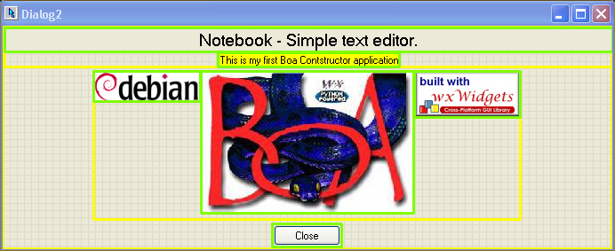
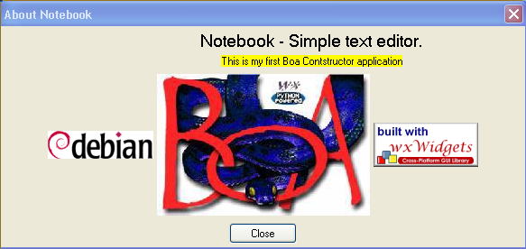

2.8 Creating a Dialog Window - with sizers
Sizers are a great way to ensure that your GUI layout is nice and
clean. They come in especially handy when you do not know exactly
how much space a control needs and/or should be allowed to use, this
can be the case when you internationalize your application (I18N) or
for such controls are lists or grids where you like to give as much
space as possible to them (or maybe as little as practical).
Please note that the following will just explain how to use Sizers
in Boa. For more detailed information about sizers you should
check the wxPython documentation and you might also find the following
links interesting.
In the previous section you already created a Dialog, now we are going
to do another one but to align things we will use sizers.
- The dialog we are going to create will require a new window. It
is not
a component of the Frame1 window. It will exist in our application as
a separate Python file. Select the application module 'App1' in the
editor.
Chose the 'Application' pane.
- On the palette, select the 'New' pane. Select the 'wx.Dialog'
button.
This
will create a new source file Dialog2.py, and will automatically add
this new source file to your application module.
- Select the Frame1 pane. We will just change the code for the
'About'
menu
option, which is used to display the dialog. This option is implemented
by the method 'OnHelpAboutMenu'. The code is as follows:
def
OnMenuHelpAboutMenu(self, event):
dlg = Dialog2.Dialog2(self)
try:
dlg.ShowModal()
finally:
dlg.Destroy() |
- This code references the Dialog2 module. Before this code works,
we must
import the Dialog2 module. By convention, we keep imports at the start
of the source. Add the line 'import Dialog2' to the Frame1.py after the
line
'import wx'.
- Save all your source files. You can run the application now.
When you
select the 'About' option from the 'Help' menu your new Dialog will
appear.
Notice that the dialog is modal, i.e. you must close it before you can
access the Frame1 window. Exit the application and return to Boa
Constructor.
- Select the Dialog2.py pane. Start the Designer by clicking on the
button
 .
.
- Now add some sizers to the "Sizers" pane (they are on
Containers/Layout pane).
- A BoxSizer and change its name to 'bsDialog'
- A FlexGridSizer and change its name to 'fsTextctrls' and change
the 'Cols' value to '1' and the 'Rows' value to '0'
- Another FlexGridSizer and change its name to 'fsImages' and
change the 'Cols' value to '2' and the 'Rows' value to '0'
- And one more FlexGridSizer and change its name to 'fgsButton'
and change the 'Cols' value to '1' and the 'Rows' value to '0'
- Things should now look similar to the image shown below.

- Select the Dialog2 in the Designer and change its Property Sizer
on the 'Props' pane to self.bsDialog.
- If you look at the Designer now you will see a yellow frame.
- On the Sizers pane double click on the bsDialog entry to open the
Collection Editor.
- Create three items by clicking on the 'More new' button and
selecting Add sizer

- Change the three items as shown on the above image.
- Set 'Border' to '2', 'Flag' to 'wx.ALL', 'Proportion' to
'1' and the 'Sizer' to the sizers 'fgsImages', 'fsTextctrls' and
'fgsButton'
- Post all the changes and save all your source files.
- Select the Dialog2.py pane again and start the Designer by
clicking on the
button .
- Lets add a label to the Dialog. On the palette select
'Basic
Controls'. From this pane select the wx.StaticText control. On the
Designer
click the mouse button to create the control.
- On the Inspector edit the field 'Label'. Set the value to 'Note
book -
Simple Text Editor'. Notice that the label in the Designer will grow to
accomodate your text.
- We use the style property to configure the alignment of the text
within
the label. Set the style property to 'wx.ALIGN_CENTRE' or select this
style after clicking on the check box to the left of style.
- Select the 'Properties' pane in the inspector. Edit the field
called
'font'.
Set the font to a reasonably large font, e.g. 12 or 14 point. Notice
that
you can change both the font and point size with this property.
- Now add another label below the first. Set the text to 'This is
my
first
Boa Contstructor application'. In the Inspector, select the
'Properties'
pane. Edit the value 'BackgroundColour'. Pick a colour from the set
available
and press OK.
- We will now add three images, I used Boa.jpg, Debian.png and
wxWidgetsButton.png. You can
create your own bitmap using a paint utility. Copy the bitmap to your
application
directory.
- Next we will add the bitmaps. From the 'Basic Controls' select
the
wx.StaticBitmap
control. Place this below the second label on your dialog. In the
Inspector
select the Constructor pane. Edit the Bitmap field. This will give you
an 'Open File' dialog. Choose the bitmap you painted earlier. The
wx.StaticBitmap
field in the Designer will change to accomodate your bitmap.
- Repeat this for the other two bitmaps
- Finally, we will add a button to the Dialog. In the Palette
select the
'Buttons' pane. Select the basic button type, wx.Button. Place this on
the
form below the bitmap. On the Inspector Constructor pane edit the
'Label'.
Set this to 'Close'. Select the Events pane in the Inspector. Add a
handler
for event type EVT_BUTTON.
- Hint: select the event group first, then the
event.
- You should now see something similar to the image below - one
could say a bit messy!

- Post your changes and save your source file and open the Designer
again.
- This are all the controls we are going to add to the Dialog.
- Now we need to add these different controls to the appropriate
sizer.
- Select the 'fgsTextctrl' sizer, double click and add two new
items.
- Change the items as shown on the image below.

- Press the 'Refresh' button on the Collection Editor and check
what effect this has on the Designer.
- Now add the images to 'fgsImages' sizer.
- Now add the button to 'fgsButton' sizer.
- How does this look? Not quite what we want!
- Select the 'bsDialog' sizer, double click it and use the up and
down arrows to put the sizers into the following order; 'fsTextCtrls',
'fgsImages' and 'fgsButton'.
- Now select the 'fgsImages' and change the 'Cols' constructor to
'3'.
- Double click the 'fgsImages' entry on the Sizers pane and move
the images into the following order, wxWidgets, Boa, Debian.
- Your dialog should now look similar to the following.

- This is still not what we want, the button is half hidden, and
lots of space is wasted, the images are not nicely aligned.
- A little challange: Go back to the sizers pane and make
adjustements to e.g. settings such as proportion, aligment flags,
correct the text of the first text control etc to arrive at a dialog
which looks more like the following.

- Select the Dialog2 in the Designer. In the Constructor pane in
the
Inspector,
edit the Title field. Set this to 'About Notebook'.
- Press either post button to update the source code with your
changes.
- Finally, we need to implement the event handler for the Close
button.
In
the Editor select the source for Dialog2. Go to the source for your
method
'OnButton1Button'. We will use the same 'Close' method as we used in
the
'Exit' menu item. Note that this closes the window. Closing the root
window exits the application. However, closing a child window will
simply
return to the parent window.
def OnButton1Button(self,
event):
self.Close() |
Run the application. Your new Dialog should look something like this.

Please note that the files generated during this example are also
available in the directory "Examples\guide" under your Boa installation
directory.